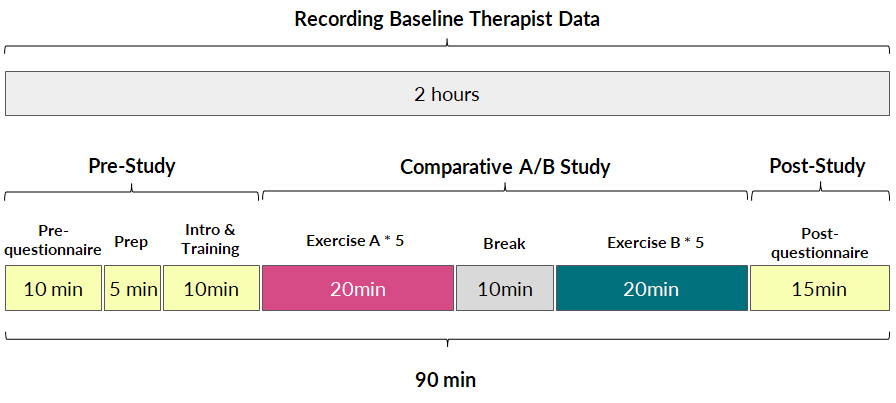

Publication
Junyi Zhu, Yuxuan Lei, Aashini Shah, Gila Schein, Hamid Ghaednia, Joseph H. Schwab, Casper Harteveld, Stefanie Mueller.
MuscleRehab: Improving Unsupervised Physical Rehabilitation by Monitoring and Visualizing Muscle Engagement
In Proceedings of
UIST ’22.
DOI PDF Video Slides Open Source Video Selected Press Slides


DOI PDF Video Slides Open Source Video Selected Press Slides
1 / 50

2 / 50

3 / 50

4 / 50

5 / 50

6 / 50

7 / 50

8 / 50

9 / 50

10 / 50

11 / 50

12 / 50

13 / 50

14 / 50

15 / 50

16 / 50

17 / 50

18 / 50

19 / 50

20 / 50

21 / 50

22 / 50

23 / 50

24 / 50

25 / 50

26 / 50

27 / 50

28 / 50

29 / 50

30 / 50

31 / 50

32 / 50

33 / 50

34 / 50

35 / 50

36 / 50

37 / 50

38 / 50

39 / 50

40 / 50

41 / 50

42 / 50

43 / 50

44 / 50

45 / 50

46 / 50

47 / 50

48 / 50

49 / 50

50 / 50

MuscleRehab: Improving Unsupervised Physical Rehabilitation by Monitoring and Visualizing Muscle Engagement
Figure 1. MuscleRehab is an electrical impedance tomography and optical motion tracking enhanced rehabilitation system for visualizing muscle engagement and motion data during unsupervised physical rehabilitation.
Unsupervised physical rehabilitation traditionally has used motion tracking to determine correct exercise execution. However, motion tracking is not representative of the assessment of physical therapists, which focus on muscle engagement. In this paper, we investigate if monitoring and visualizing muscle engagement during unsupervised physical rehabilitation improves the execution accuracy of therapeutic exercises by showing users whether they target the right muscle groups. To accomplish this, we use wearable electrical impedance tomography (EIT) to monitor muscle engagement and visualize the current state on a virtual muscle-skeleton avatar. We use additional optical motion tracking to also monitor the user’s movement. We conducted a user study with 10 participants that compares exercise execution while seeing muscle + motion data vs. motion data only, and also presented the recorded data to a group of physical therapists for post-rehabilitation analysis. The results indicate that monitoring and visualizing muscle engagement can improve both the therapeutic exercise accuracy during rehabilitation, and post-rehabilitation evaluation for physical therapists.
INTRODUCTION
Physical rehabilitation assists a person in recovering from musculoskeletal injuries. It can help people get back, keep, or improve abilities needed for daily life. Around three quarters of years (74%) lived with disability (YLDs) in the world are the result of health conditions for which rehabilitation can be beneficial [29]. However, there are not enough physical therapists to serve the needs of all people [55] due to population aging and higher rates of severe health conditions even within the same age group [45].
Several efforts have been made to remove burden from the therapists to allow them to focus on more essential tasks and treat more people. Two examples of this are user reported outcomes to determine the current state of the patient’s condition [31] and unsupervised rehabilitation sessions (e.g., home-based rehabilitation) rather than entirely in-clinic therapy sessions [34]. However, both of these rely on user’s subjective assessment of their exercise execution and progress [2].
More recently, HCI researchers developed sensor-based techniques, such as motion sensors attached to a user’s body [37], as well as optical sensors [33] and flex sensors [40] to collect movement data for quantitative assessment of the patient during unsupervised rehabilitation. While these measures provide additional data about the user, they are designed around capturing motion data, and therefore are not representative of the assessment a therapist does. Therapists gain important information from muscle engagement and tension, in addition to movement. The analysis of muscle engagement is key for successful rehabilitation since the same movement can be achieved in multiple ways using different muscles [44].
Monitoring muscle engagement has been a topic of interest for HCI researchers. One technology used frequently is Electromyography (EMG). However, EMG can only measure the action potentials of contracted muscles resulting from nervous system activity, not stretched muscles. In addition, EMG generates one-dimensional on-surface measurements for each muscle, which does not provide a holistic picture over a larger area or multiple layered muscle groups [36]. Finally, signals captured with EMG are in the same order of magnitude as mechanical noises and thus cannot be differentiated from motion artifacts [56]. Especially noises on the skin-electrode interface can result in significant signal disturbances [49].
Recently, researchers developed wearable devices based on electrical impedance tomography (EIT) [64]. EIT is an imaging technique that measures conductivity, permittivity, and impedance of a subject [21]. It works by attaching electrodes to the surface of the subject (i.e. skin), using the electrodes to either inject current or measure the resulting voltages, and then reconstructing an image of the body’s internal conductivity. EIT can be used for monitoring both contracted and stretched muscles, and compared to EMG is less sensitive to mechanical noises. In addition, EIT data can be used to reconstruct 3D volumetric muscle engagement data. However, so far, no research has been done to investigate if EIT technology can be used to improve unsupervised physical rehabilitation.
In this paper, we investigate whether monitoring and visualizing muscle engagement via EIT can improve unsupervised physical rehabilitation. To answer this question, we build MuscleRehab, a rehabilitation system that tracks user’s motion via optical motion tracking and user’s muscle engagement via electrical impedance tomography (EIT) and visualizes the data on a virtual muscle-skeleton avatar (Figure 1). To visualize muscle engagement on the virtual avatar, MuscleRehab reconstructs 3D volumetric muscle engagement from the EIT data. Using the MuscleRehab system, we conducted a user study with 10 participants, performing a sequence of lower extremity therapeutic exercises designed around the total knee arthroplasty (TKA) rehabilitation protocol, with and without muscle engagement visualization, and measured the muscle engagement accuracy during each condition. For the user study, we chose to visualize the motion and muscle engagement in a virtual reality environment instead of other display modalities to have better control over the study environment. We further evaluated the effectiveness of the recorded muscle engagement data for therapists during post-rehabilitation analysis by conducting a second study with 6 physical therapists. The results indicate that with the muscle engagement visualization, users’ accuracy of therapeutic exercise execution increased by 15%, and physical therapists were able to improve their post-rehabilitation evaluation.
In summary, we contribute:
- a formative study with 7 physical therapists to understand the challenges of unsupervised physical rehabilitation and how to improve it with sensor-based techniques;
- an electrical impedance tomography and optical motion tracking enhanced rehabilitation system, MuscleRehab, for visualizing muscle engagement and motion data on a muscle-skeleton avatar for unsupervised physical rehabilitation;
- a study with 10 participants to determine the muscle engagement accuracy of lower extremity therapeutic exercises during unsupervised physical rehabilitation, with and without muscle engagement visualization;
- a study of 6 physical therapists evaluating the effectiveness of muscle engagement data for post-rehabilitation analysis;
- a technical evaluation of the data fidelity, 3D image reconstruction and system performance of MuscleRehab.
FORMATIVE STUDY
To further increase our understanding of the challenges involved in unsupervised physical rehabilitation, we conducted a formative study with 7 professional physical therapists (PTs). The participants included 4 males and 3 females, aged 27-35 (M=30.8, SD = 2.99).
We conducted semi-structured interviews (30 minutes per participant) and focused our questions on the following two parts: (1) what are the challenges therapists encounter around unsupervised physical rehabilitation, and (2) what additional information would therapists like to collect during unsupervised physical rehabilitation to help them determine the current state of the patient’s condition. We describe our findings below and discuss how to address some of those needs with sensor-based techniques.
Absence of User Exercise Compliance & Quality Data: All PTs mentioned that they struggled with improving the exercise compliance and execution quality during unsupervised rehabilitation sessions. PT3 explained that “[...] the level of success of a Home Exercise Program varies largely across different patients, [it depends on] their motivation and exercise posture”. PT3 added that “[...] it would be very helpful if there is a system to keep track of [exercise quality] and provide posture guidance during home exercise programs.” PT5 further stressed that “[...] we can check the muscle engagement status with the hand and correct the patient in clinic, this [information] is missing for home programs.”
Difficulty of Accurate Evaluation without In-clinic Diagnosis: Multiple PTs stated that it can be challenging to accurately evaluate and keep track of the recovery progress during remote post-rehabilitation analysis, unless the patients come in for an in-clinic diagnosis. PT5 stated that “[...] although there exists self-report evaluation metrics, like KOOS (Knee Injury and Osteoarthritis Outcome Score [50]) and LEFS (Lower Extremity Functional Scale [6]), a lot of patients don’t fill them out at all or not correctly.” Therefore, they indicated that objectively measured posture and muscle engagement data can be much more effective than self-reported metrics when it comes to post-rehabilitation evaluation.
New & Higher Level Exercises: Three PTs mentioned that new and higher level exercises are much more difficult for patients to execute correctly on their own. PTs mentioned that because of the increased difficulty these exercises particularly benefit from the assistance sensor-based techniques can provide. PT3 stated that “[...] it often takes them a few clinic visits before they can execute new or higher level exercises under an unsupervised environment, and that time can be potentially be saved with sensing and real-time feedback systems.” PT4 also added that “some [higher level] exercises require multiple muscle groups to execute, as stabilizer and actuator, and sometimes patients mix those up, so [although] it might look correct, it is using the wrong muscle [...] this can be resolved by muscle data instead of just posture [data].”
Data Capturing & Feedback: Several PTs expressed that they wished more data would be captured during unsupervised rehabilitation sessions, especially muscle and motion data, and more feedback would be provided to the patient. PT6 highlighted that “our clinic started to deploy a recording App for patients’ home exercise programs during the pandemic, so that they can record themselves during the exercise for us to better evaluate [their progress]. I find that really helpful for [post-rehabilitation] evaluation, and would love to have more key data captured, like muscle and joints activity.”
Based on these insights from our formative study, we focused on muscle engagement data and motion data and designed MuscleRehab, a real-time muscle engagement visualization and motion tracking enhanced rehabilitation system for unsupervised physical rehabilitation to better guide users during exercise sessions and assist PTs for post-rehabilitation evaluation. In addition, our formative study interviews indicate that there are other challenges that need to be addressed with future research, such as improving tracking of the training routine & completion as well as designing home programs with a focus on increasing motivation.
MUSCLEREHAB SYSTEM SETUP
MuscleRehab is an electrical impedance tomography and optical motion tracking enhanced rehabilitation system for visualizing muscle engagement and motion data during unsupervised physical rehabilitation. We use the MuscleRehab system as the study prototype for investigating whether monitoring and visualizing muscle engagement via EIT can improve unsupervised physical rehabilitation. MuscleRehab consist of a customized wearable EIT sensing device for measuring muscle engagement, a high precision optical motion capture system, as well as a rehabilitation user interface in a VR environment that serves as a therapeutic exercises guide and displays muscle engagement and motion data.
Wearable EIT Sensing Device
Our customized wearable EIT sensing device is based on the open-source board EIT-kit [64] and thus allows for EIT signal calibration and measurement for various electrode configurations. It consists of a main sensing board that can be flexibly extended with a stack of modular multiplexer boards. The mux boards can support up to 64 channels when connected to the main sensing board for high resolution EIT image reconstruction. Rather than using the original EIT board design, we changed the microcontroller and bluetooth communication module to enable more consistent long-time measurements and improved signal integrity during data transmission (see section 5 ’Implementation’).
For our user study, in which we focus on total knee arthroplasty (TKA) rehabilitation, we use two electrode arrays, each containing 16 standard ECG medical electrodes to create a 3D volumetric image of the thigh. This provides more comprehensive data on the muscle engagement, and reduces measurement errors due to the EIT device shifting slightly during movement. We attach the electrodes evenly onto the user’s upper and lower thigh, and connect them to the EIT sensing board via standard snap electrode cables. We apply an adjustable fabric leg strap on top of each electrode array to keep them in position and ensure consistent skin-to-electrode contact, as shown in Figure 2.
Figure 2. Electrical Impedance Tomography sensing board and measuring setup.
Optical Motion Capture System
The optical motion capture of MuscleRehab is built on top of OptiTrack [28] (Figure 3). It is equipped with 29 motion capture cameras (Prime-13) streaming at ∼250 frames per second. A tracking suit with 39 tracking markers results in a 3D precision as fine as 0.5mm at long ranges and 0.2mm in close proximity. We use the OptiTrack system for both recording and streaming of live motion data. We use the recording functionality to capture the baseline motion for the user study from a physical therapist, which is later displayed to the user study participants. We use the live streaming functionality to capture user study participants’ motions and show them side-by-side with the pre-recorded motion data of the therapist.
In order to display the motion data on our custom muscle skeleton avatar, we first export the motion data, then map it onto an animation rig, and finally render it onto our custom designed muscle skeleton avatar to stream (or store) the motion in real time.
Figure 3. Optical Motion Tracking System.
Rehabilitation User Interface
The rehabilitation user interface is integrated into a VR environment, which we developed using the cross-platform 3D game engine Unity and display with an HTC VIVE Pro 2 VR headset [11]. As shown in Figure 4, our user interface has a floating control panel on the left for selecting 10 different lower extremity therapeutic exercises (8 for single leg, and 2 requiring both legs). In addition, there are two muscle skeleton avatars: the therapist avatar on the left side, which displays the correct motion and targeted muscle groups, and the patient avatar in full size in the middle and as a close up view on the right side, which displays the patient’s live motion and muscle engagement data. When the system’s muscle visualization is turned on in the user study, the muscle engagement data of the participant is mapped onto the corresponding muscle groups of the patient avatar using color mapping: red for quadriceps, green for sartorius, blue for hamstrings, yellow for adductors, with darker tones indicating more engagement of the muscle groups (i.e., more contracted or stretched). To ensure that the muscles of the avatar 3D model contract and stretch in the 3D environment with the corresponding movement, each muscle group is rendered as an individual 3D model and each muscle 3D model is linked to the corresponding joints. Moreover, the patient avatar has a zoomed in window displayed next to it, which shows a detailed view of the avatar’s muscles where the EIT-device is located. We implemented the user interface in third person perspective to create a “mirror” setup, which is common for exercise training. This allows users to monitor their entire body which is not possible in first person perspective. Instead of the conventional hand-hold VR con- trollers, we use the eye tracking and head movement of the user, captured via inertial sensors on the VR headset, to interact with the rehabilitation user interface.
Figure 4. MuscleRehab User Interface.
Displaying Muscle Engagement Feedback
MuscleRehab extracts the muscle engagement data that is overlaid over the patient’s avatar (Figure 4) from a 3D reconstructed EIT image. For more accurate representation of the EIT data, the boundary of the 3D reconstructed image is based on a custom build forward model, i.e. a standard mid thigh model. The custom forward model contains four major muscle groups: quadriceps, hamstrings, adductors, and sartorius. As shown in the Figure 5, upon receiving the EIT measurements from the wearable EIT sensing device (4.1), the system processes the voltage measurements from the electrode pairs and calculates the conductivity distribution, i.e. the conductivity at each voxel within the boundary. The system then samples the raw conductivity data within each of the muscle group regions, calculates the regional conductivity of each muscle group, and compares it to the regional conductivity of the starting position of the motion (baseline) to compute the differential changes in muscle engagement. Finally, the differential regional conductivity changes are mapped onto standard red, green, blue, and yellow color spectrums, and visualized on the corresponding muscle groups (red for quadriceps, green for sartorius, blue for hamstrings, yellow for adductors) of the patient avatar, with darker tones corresponding to a more engaged muscle (i.e., more deviation from the baseline ranging from -1.0 (maximum contracted) to 1.0 (maximum stretched)).
Figure 5. Displaying muscle engagement on a muscle skeleton avatar from EIT measurement.
IMPLEMENTATION
In this section, we provide additional details on how each component of MuscleRehab is implemented, including the VR environment and motion tracking system, the EIT sensing board and measuring configuration, as well as the 3D image reconstruction algorithm.
VR Environment & Motion Tracking
We used Rhino 3D, a computer-aided design software, to build the VR environment model. We then imported the VR environment model into the VR engine Unity and rendered it with the High Definition Render Pipeline (HDRP). We also used Rhino 3D to create a high-precision average adult model consisting of 304 muscle pieces based on the BioDigital libraries [7]. After finishing the modeling, we imported the muscle model into the 3D editor Blender for rigging. In Blender, we used Autorig, a Blender add-on, and followed the information in the BioDigital libraries to match the muscle model to the rig, bind the armature, retarget the animations, and finally export it to Unity in .fbx format.
In our VR interface in Unity, there are two muscle skeleton avatars. The therapist avatar displays animations of the pre-recorded therapist’s motion sequence, which we store in the system. The patient avatar, in contrast, receives live-streamed data. To receive the live-streamed motion data, the patient avatar is connected to a software called Motive, which is used to live stream the 3D position, marker ID, rotational data, and skeletal tracking from OptiTrack [28]. In addition, the patient avatar is also connected to Matlab, which transmits the data that corresponds to the engagement of the different muscle groups. The data contains an array of 8 EIT values ranging from -1.0 to 1.0 (with -1.0 referring to 100% stretched and 1.0 referring to 100% contracted), corresponding to the degree of engagement of the 8 muscle groups on both of the thighs. Upon both inputs, Unity visualizes both real-time motion and muscle engagement information on the patient’s avatar model.
EIT Sensing Board & Measuring Configuration
The custom EIT sensing board of MuscleRehab is designed based on the open source EIT-kit design [64]. Our board design consists of one main sensing board for injecting the AC signal and measuring the resulting voltage output, and up to two stack-up multiplexer boards, each containing four 32-to-1 analog multiplexers, which can direct the signal freely for up to 64 individual electrodes. The EIT sensing board is capable of auto-calibrating sampling time, injecting AC current amplitude and measuring voltage gain to achieve optimized impedance results based on the measurement target. This is implemented via adjustable instrumentation amplifiers and modulated by digital rheostats that control both differential current source and differential voltage measurement. While the board can provide differential injecting AC current up to 500kHz, we used a 50kHz signal for our user study since it is the optimized signal frequency for human skin [60].
Compared to the original open source design, we redesigned the circuit around a Teensy 4.0 microcontroller (as shown in Figure 6a) to achieve a faster clock rate and more computational power, which results in faster processing time and a more consistent sampling rate over a long period of operation. We also implemented a standalone HM-10 BLE module instead of the previous integrated wireless communication device, and placed it far away from the 20MHz ADC (ADS901E) to ensure the input analog signal fidelity. In addition, we redesigned the control circuit so that the new board uses one less SPI channel, which improves the overall signal synchronization over a long time period of EIT measurements.
For the 3D volumetric EIT measurement of the thigh muscle groups, we implemented two 16-electrode designs with four-terminal configurations. Instead of a conventional “layered” electrode layout and "adjacent" stimulate & measure pattern, we implemented a "square" electrode layout, with “skip 4” stimulate & measure patterns, as shown in Figure 6b. As a result, our system is capable of capturing more information from the inner and cross-sectional space between the two electrode arrays (rather than more information around the skin surface area as the conventional layout and pattern provides) [18].
3D Image Reconstruction Algorithm
MuscleRehab solves the inverse problem of inferring the internal conductivity 𝜎 over a 3D domain Ω from voltage responses 𝜙 to current sources 𝐼 . This is mathematically formalized by the continuum Ohm’s law 𝐽 = 𝜎∇𝜙, where 𝐽 is the current density, and the continuum Ampere’s law ∇ · 𝐽 = 𝐼. Under the assumption of no interior current sources, we can combine these equations, which provides us with the continuum Kirchoff’s law:
∇ · σ ∇φ = 0. (1)
Figure 6. (a) EIT sensing board and (b) signal stimulate & measure pattern.
The boundary current sources are encoded by 𝑗 = −𝐽 · 𝑛ˆ, where 𝑛ˆ is the surface normal of Ω. We can solve the linear PDE (1) for voltages 𝜙 over Ω for a fixed 𝜎 and boundary conditions. Conventionally, one would set the internal conductivity to be constant conductance (e.g 𝜎0 initialized to be of constant conductance 1) and choose a unit cylinder model for simplicity. For our system, since we are interested specifically in the conductivity changes in thigh muscle groups during the motion rather than the absolute values, we constructed a custom 3D forward model, based on an average thigh model from a biology text book. We set the muscle regions in the model to be a higher conductance than surrounding tissue (fat, bone etc., which have lower conductance compare to muscle), as shown in Figure 7. The model is constructed via Netgen [54] in MATLAB. Please note that in the figure, we set the four muscle groups to different conductances so that they are more distinguishable, in practice we set them to be the same conductance. This solves the forward problem of determining 𝜙 from known 𝜎, 𝑗, with 𝑓 (Ω, 𝜎) be the restriction of voltages 𝜙 to the boundary 𝜕Ω.
Figure 7. Side (left) and top (right) view of the customized thigh forward model.
For the ‘inverse’ problem, we experimentally choose current sources 𝑗 , and measure the boundary voltages 𝜙̃. The 𝜎 can then be inferred by solving the nonlinear optimization:
σ^∗ =argmin(σ) ∥f(Ω,σ)−φ̃∥2 (2)
With assumptions that 𝜎 does not change quickly in time, we can solve the 𝜎^𝑘 based on 𝜎^(𝑘−1) to achieve a faster and more stable solution, where 𝜎^(𝑘−1) be the solution to (2) for the previous timestep. We use the differential one-step Gauss-Newton solver, with prior Laplace filter. The functions are implemented via EIDORS [1] in MATLAB.
Once reconstructed the 3D image, we extract the conductance val- ues for each muscle group based on the conductance values of the cube voxels within the corresponding regions assigned in the for- ward model. We then interpolate the values onto the range of -1 to 1, with -1 be full stretched and 1 be fully contracted, based on user-specific calibrated baseline values, for each muscle group. The user-specific baseline for each muscle group are measured when users fully contract and stretch the corresponding muscle group.
USER STUDY #1: TRAINING WITH AND WITHOUT MUSCLE ENGAGEMENT VISUALIZATION
In our first user study, we investigated if real-time visualization of muscle engagement via EIT in addition to motion can improve unsupervised physical rehabilitation when compared to motion visualization only. For the study, we investigate potential improvements for total knee arthroplasty (TKA) rehabilitation, which focuses on the training of muscles in the thigh.
Study Design
Hypothesis: Our hypothesis was that performing unsupervised physical rehabilitation with real-time muscle engagement visualization in addition to motion will result in a higher muscle engagement accuracy compared to motion tracking only.
Participants: We recruited 10 participants (4 female, 6 male) aged 20-26 years (M=23.4, SD=1.96). The mean height of the participants was 170.4 cm (SD=10.62). 8 participants were right-handed and 2 left handed. 4 participants had experience with lower extremity therapeutic exercises through professional physical therapists before, and 3 of them were doing regular lower limb training sessions. All participants had little to none physical disability around their lower limbs. Each participant was compensated with $30 U.S. dollars for their participation.
Conditions: The study had two conditions and followed a within-subjects design. We used randomized order to avoid order effects for the participants. The two conditions were: motion data only vs. muscle and motion data. In both conditions, the therapist avatar showed the same type of information, i.e. displayed the correct motion and muscle engagement. Depending on the condition, the patient avatar showed either only the live motion or the live motion and muscle engagement. In addition, a zoom-in window next to patient avatar showed a detailed view of the thigh muscle groups. In both conditions, participants wore the EIT device, which allowed us to record the muscle engagement data in both conditions for later comparison of the quality of the exercise execution.
Study Setup: Participants were asked to wear a tracking suit with 39 trackers, the EIT sensing device with 32 3M medical electrodes attached to their non-dominant upper thigh, and an HTC VIVE Pro 2 VR headset for the entire study. The VR user interface showed the therapist avatar, which displayed the current lower extremity therapeutic exercise movement, and the patient avatar with the real-time motion or motion+muscle data depending on the condition.
Recording Baseline Therapist Data: To record the baseline motion that is shown on the therapist avatar, we recruited a licensed physical therapist who professionalizes in lower limb rehabilitation. We worked with the therapist to record ten lower extremity therapeutic exercises. Seven of the exercises were directly taken from the total knee arthroplasty (TKA) rehabilitation protocol, and three were designed by the therapist to be more advanced versions of the TKA exercises. To create the recordings, the therapist wore only the motion tracking suit to ensure the highest possible tracking accuracy during exercise execution, and performed ten repetitions of the same type of exercise motion for each of the ten exercises. The therapist did not wear additional hardware (i.e., no VR headset and wearable sensing device) during the recording. We then mapped the whole sequence of ten repetitions onto the therapist avatar, which is shown when participants execute their exercises. For displaying muscle engagement, we asked the therapist to identify which muscles should be engaged for each of the ten exercise types. We then used this information to highlight the corresponding muscles in the muscle skeleton avatar. The baseline recording session took 2 hours and the therapist was compensated with $200 U.S. dollars.

Figure 8. The ten lower extremity therapeutic exercises in user study #1.
Capturing Participant Data: At the beginning of the study, each participant filled out a form to record their past experience with physical rehabilitation. As shown in the Figure 9, we then calibrated the avatar and EIT device to each participant during the “Prep” stage, and participants got to interact and become familiar with the avatar and muscle visualization during the “Intro & Training” phase. After this, each participant performed two groups of lower extremity therapeutic exercises, each containing a sequence of five different exercises with ten repetitions each. Thus, across the two exercise groups, participants performed ten different exercises in total, all of which are shown in Figure 8. Each participant performed one group of exercises in each condition, with the order of conditions randomized. The combinations of the five exercises in each group were balanced based on their postures (3 standing, 1 sit down, 1 laying down), target muscle engagement and levels of difficulty, as recommended by the physical therapist. Participants took a 2 minutes break between each exercise, and a 10 minutes break between each group of exercises. After the study, each participant filled out a questionnaire to provide post-study feedback for the system. In total, the study took 90 minutes, including the device setup and questionnaires.

Figure 9. User study #1 procedure.
Measuring Muscle Engagement Accuracy: We measured the muscle engagement accuracy by first calculating the time during which the engaged muscles matched the correct muscle groups, based on calibrated EIT muscle engagement thresholds during the study “Prep” stage. We then divided the result by the overall exercise session time for each of the designed therapeutic exercise to compute the muscle engagement accuracy percentage.
Study Results
The results for muscle engagement accuracy for each of the ten exer- cises are shown in Table 1. Across the ten therapeutic exercises, par- ticipants engaged muscles more accurately in the muscle+motion (65.02%, SD=16.16%) condition than motion only (50.03%, SD=10.51%). We found the difference to be statistically significant (p-value=0.024). For exercises with higher difficulty levels (e.g. Single Leg Deadlift, Standing Fire Hydrant), and non-conventional postures (i.e. laying down exercises such as Straight Leg Raise Side, Single Leg Bridge), participants’ muscle engagement accuracy improved even more, with muscle + motion 74.31%, SD=20.26%, and motion only 42.57%, SD=26.49% (p-value = 0.0016). One outlier in our results was the exercise Sit to Stand, which participants performed more accurately in the motion only condition. One reason for this may be that this exercise is very common in daily life, i.e. highly practiced, and the additional muscle engagement visualization might have ended up being distracting for this simple motion.
In our post study questionnaire, we asked participants to rate the accuracy and responsiveness of the motion tracking and muscle visualization in MuscleRehab on a scale of 1-5. The results show that participants perceived both motion and muscle visualization to be similarly accurate and responsive, i.e. they rated motion tracking with an average 3.89 (SD=1.27) and muscle visualization with an average of 3.67 (SD=0.87).
Table 1: Muscle engagement accuracy of different exercises in motion tracking only and motion tracking + muscle visualization conditions.
| Exercise Type | Motion | Motion + Muscle Vis. | p-value |
| Front Lunge | 59.13% | 72.02% | 0.099 |
| Standing Knee Bend | 44.92% | 61.58% | 0.064 |
| Seated Knee | 47.51% | 59.52% | 0.278 |
| Single Leg Deadlift | 41.16% | 72.42% | 0.010 |
| Straight Leg Raise Side | 48.00% | 67.89% | 0.041 |
| Terminal Knee Extension | 54.82% | 54.84% | 0.998 |
| Single Leg Squat | 55.58% | 53.31% | 0.779 |
| Sit to Stand | 66.31% | 36.01% | 0.015 |
| Standing Fire Hydrant | 54.29% | 76.07% | 0.069 |
| Single Leg Bridge | 28.61% | 96.55% | 0.002 |
| Average Accuracy | 50.03% | 65.02% | 0.024 |
Qualitative Feedback
All 10 participants stated a preference for the motion + muscle visualization condition over the motion only condition. Below, we summarize additional observations and qualitative feedback.
More Guidance on Rectification: In addition to the muscle engagement visualization, which allowed participants to identify exercise mistakes, several participants expressed that they would like to also see guidance on how to rectify the exercise motion. P9 stated that “I become much more aware if and when I am performing the exercise wrong because of that (muscle visualization), and it would be even better if the system can guide me to correct it.”
Customized Avatar: Multiple participants expressed that they would like to use a customized avatar during rehabilitation that better fits their body proportions and gender. For instance, P3 commented that “[I] would like to see a female body [avatar]”. For the user study, we did not customize the avatar to prevent introducing another variable. For future work, we plan to implement customized avatars that better fit a user’s physiology.
Alternative Environments: In addition to displaying muscle engagement data in VR, some participants expressed that they would also like to explore other display modalities, such as the use of AR or 2D displays. While the immersiveness of the VR environment was highly appreciated by participants as indicated on our post-study questionnaire (rated 4.13 out of 5), some participants expressed worry about potential motion sickness when the VR headset is used over longer periods of time.
USER STUDY #2: EVALUATING WITH AND WITHOUT MUSCLE ENGAGEMENT VISUALIZATION
For our second user study, we investigated if muscle engagement data can also be helpful for physical therapists when conducting remote post-rehabilitation analysis. In remote post-rehabilitation analysis, the data is sent to therapist’s office after the patient trained at home for evaluation and further exercise recommendation.
Study Design
EIT-kit’s 3D editor is implemented as a Grasshopper Plugin for the 3D editor Rhino3D.
Hypothesis: Our hypothesis was that displaying muscle engagement data in addition to motion assists physical therapists in performing remote post-rehabilitation analysis closer to on-site analysis, when compared to motion data only.
Participants: We recruited 6 licensed physical therapists (2 female, 4 male) who professionalize in lower limb physical rehabilitation. Therapists ages ranged from 27-32 years (M=29.8, SD=2.17), and on average worked for more than 5 years in the field. The participating physical therapists were compensated with $80 U.S. dollars per hour for 3 hours ($240 U.S. dollars per therapist, $1440 U.S. dollars for all six therapists together).
Conditions: The study had two conditions and similar to the previ- ous study followed a within-subjects design. We used randomized order to avoid order effects for the participants. The two conditions were: motion data only vs. muscle and motion data, i.e. we pro- vided therapists with a corresponding screen recording of the VR environment for each of the participants from user study #1, which all had participated in both conditions. In addition, we provided therapists with an on-site video recording of each participant’s exercise session from user study #1 to mimic a video-based remote therapy session.
Baseline On-Site Evaluation: To be able to compare the accuracy of remote post-rehabilitation analysis to on-site post-rehabilitation analysis, we recruited one additional physical therapist who was present as a silent observer during user study #1. For each exercise, the on-site therapist assessed if the correct muscle was engaged or not based on observation. In addition, they noted what muscles were wrongly engaged in case the exercise was not executed correctly. While in on-site therapy physical therapists sometimes touch the patient’s body to further validate muscle engagement, this was not feasible in our study due to interference with the motion capture and added noise in the EIT data collection. However, we confirmed with the therapist that assessing muscle based on observation is feasible and often done in rehabilitation sessions. The on-site therapist did not know under which condition (motion only vs. motion + muscle) participants executed the current exercise to remove potential bias. The overall accuracy ratings for the ten exercises by the on-site therapist’s evaluation were for motion only 8.31 (SD=0.70) and for motion+muscle 8.75 (SD=0.52). The on-site physical therapist was compensated with $100 U.S. dollars per hour for 12 hours, totaling $1200 U.S. dollars.
Remote Evaluation: Each of the 6 remote therapists evaluated all 10 participants’ recordings of all 10 lower extremity therapeutic exercises based on their execution quality, on a scale of 1 - 10. Each participant’s recording contained 5 video clips of the motion-only recording and 5 video clips of the motion + muscle recording, in the same order the corresponding participant performed it in user study #1. Each video clip contained both the screencast of the VR environment view with participant & avatar motion, as well as a front view camera recording. Similar to the on-site therapist evaluation, remote therapists evaluated if the exercise was executed correctly, i.e. used the right muscles, and if not, which wrong muscle groups were used. In total, each therapist spent around 2.5-3 hours to evaluate the recordings. At the end of the study, we asked each remote therapist to fill out a post-study questionnaire.
Study Results
To evaluate how closely aligned the remote post-rehabilitation analysis was to the on-site analysis, we calculated the square deviations between each remote PT’s rating and the on-site PT’s baseline, for all ten exercises recorded in user study #1, and for the motion only and motion + muscle visualization conditions separately. The deviation results are shown in Table 2. We found that the average deviation between the remote PT and the on-site PT was smaller for the motion+muscle condition (0.83, SD=0.58) than for the motion only condition (1.62, SD=1.27). We found that the difference was statistically significant (90% confidence level, p-value=0.097).
Table 2: Rating deviation of on-site vs. remote PTs for different exercises in the motion tracking only and motion tracking + muscle visualization condition.
| Exercise Type | Motion | Motion + Muscle Vis. |
| Front Lunge | 1.36 | 0.44 |
| Standing Knee Bend | 0.82 | 0.33 |
| Seated Knee | 0.13 | 0.69 |
| Single Leg Deadlift | 1.34 | 1.61 |
| Straight Leg Raise Side | 2.69 | 1.98 |
| Terminal Knee Extension | 2.45 | 0.16 |
| Single Leg Squat | 4.25 | 0.56 |
| Sit to Stand | 0.74 | 1.11 |
| Standing Fire Hydrant | 2.06 | 0.89 |
| Single Leg Bridge | 0.35 | 0.55 |
| Average Deviation | 1.62 | 0.83 |
We also asked the PTs to rate the accuracy and responsiveness of the motion tracking and muscle visualization of the MuscleRehab based on the video recording & VR screencast, on a scale of 1- 5. The PTs on average rated the accuracy and responsiveness of motion tracking and muscle visualization to be 4.4 (SD=0.55) and 3.8 (SD=0.45). All PTs preferred the motion + muscle visualization for post-rehabilitation analysis, and agreed that the additional muscle engagement data helped them with the quality of evaluation.
Qualitative Feedback
We summarize additional qualitative feedback from the remote PTs and list below.
Facilitating Communication with the Patient: Remote therapists mentioned that having the muscle engagement data available would facilitate communication with their patients by allowing them to show data to patients on what was wrong and using the muscle avatar to explain how to correct it. PT3 commented that “[it] makes it so much easier to explain to patients when there is visual data supporting it”.
Integrating Exercise Motivators into VR: Multiple PTs suggested to integrate additional motivators into the VR exercise environment, for instance, by gamifying the exercises. PT5 explained that “[it] will motivate the patients to exercise more frequently and keep them on track of their remote program.”
Additional View Points: In our study, PTs relied on a screen recording of the VR environment to assess exercise accuracy. Several PTs mentioned that having additional view points could further help to observe the patients’ posture and muscle engagement from different angles. Since the MuscleRehab system captures and stores all the streamed motion and muscle engagement data, it can reconstruct the VR environment as the user experienced it, and show it to the remote physical therapist wearing a VR headset.
TECHNICAL EVALUATION
We evaluate how accurately our captured EIT data corresponds to each muscle group, differences between users of different BMIs, as well as the system performance of MuscleRehab, i.e. its capability to provide users with live feedback.
Correspondence of EIT Data to Muscle Group
To investigate if we can correctly identify the location of the muscle groups, we created a Phantom setup with 3D printed muscle geometries. We 3D printed a forward leg model geometry that included the four different muscle groups that we measured in the user study. We immersed the leg model in the Phantom tank filled with saline water, and mounted two electrode arrays, with 16 electrodes, each on the outside of the Phantom tank in a similar location as they were mounted on the legs of the participants.
We first evaluated the static state of the muscle. For this, we placed all 3D printed muscles inside the Phantom and created the reconstructed 3D image cross-sectional slices shown in Figure 10.
We next evaluated the dynamic state of the muscle during engagement. For this, we evaluated both volume and conductivity changes in the 3D printed muscle geometries. To do this, we changed the size of the 3D printed muscles to simulate muscle contraction and stretching and also spray painted 3D printed muscles with different conductive materials to simulate different levels of blood flow.
Figure 10. EIT reconstructed images for simulated muscle groups of different cross-sectional areas and conductivity.
Figure 10 shows the results. The reconstructed images indeed indicate that our setup is capable of regional information of the muscle groups and can also differentiate between the muscle being stretched and contracted. The more contracted the muscle is, the larger and more conductive (due to more blood flows in) the cross-sectional area becomes.
We initially considered running this evaluation on users and asking them to contract/stretch one of the four muscles at a time. However, it is not possible to collect ground truth data without invasive measurement in this case.
Consistency Between Users
To investigate if our muscle detection works across different users’ bodies, we sampled muscle reconstruction results from user study #1. Figure 11 shows the reconstructed 3D conductivity distribution, separated by muscle region, for users grouped by their BMI (calculated based on body weight and height). We chose BMI because higher BMI indicates more adipose tissue, which has been shown to lead to a worse signal-to-noise ratio because it is less conductive [8]. While this can be overcome with additional current, we limited our MuscleRehab system to AC signal amplitudes of peak to peak 5V to be safe for the user.
Participants in our user study had BMIs ranging from 18.9 to 25, falling within the Healthy Weight range of 18.5 to 24.9, except for user 8 (BMI: 25). As can be seen in Figure 11, selected users with similar BMI have visually similar 3D conductivity distributions and small variations between the quadriceps and hamstring. The quadriceps and hamstring were of particular interest because they are antagonist pairs. When one is extended, the other is flexed and vice versa. The variance is small, especially for user 5 who exhibited average BMI and received a perfect score from the on-site physical therapist. Users 4 and 6 received comments describing their lack of full knee extension. This is reflected in the larger activation variance even though the BMI is nearly the same. For users 7-9, tending larger BMIs, the variance considerably increased with the BMI, showing less consistency across the 3D conductivity distributions. User 8 was scored the highest by the physical therapist, but had the largest variance in activation variance. Therefore, a larger variance combined with an average BMI can indicate poor exercise form and a large variance combined with a BMI out of range does not necessarily indicate poor form. The conductivity distribution shows the clearest results at average BMIs and decreases in fidelity at increasing BMI values.
Figure 11. EIT muscle engagement data across different BMI groups for the seated knee exercise.
MuscleRehab System Performance
To evaluate the overall MuscleRehab system performance, we tested each part of the system individually, as well as the overall performance. The desktop computer we used is equipped with one NVIDIA GeForce RTX 2080 Ti graphics card. We let the system run for 1.5 hours, which is the time the system had to continuously function during the user study. Displaying the live motion data in both the motion and motion+muscle conditions runs at ∼90 fps, i.e. the OptiTrack system that captures the motion consistently streams at ∼250 fps and the HTC Vive Pro 2 VR headset that displays the motion to the user performs at ∼87 fps. Updating the muscle information on top of the moving virtual avatar runs at ∼5 fps, i.e. the EIT sensing board captures data at ∼26.94 fps, Matlab then reconstructs the 3D image and calculates the muscle engagement data which runs at ∼7 fps without Unity running in parallel. For our user study, we kept the muscle engagement data streaming at ∼3.3 fps in order to leave some system buffer.
DISCUSSION & FUTURE WORK
Display Modalities: The muscle engagement and motion data measured by our system can be visualized via various display modalities, such as on 2D phones, tablets, laptop displays, or via Augmented Reality. For the user study, we chose VR over other display modalities because of the need to control the training environment for our studies (i.e., to reduce distraction from the outside environment, such as visual noise). In VR, participants were also shielded from the on-site PT who rated their exercise quality, which simulated unsupervised rehabilitation. Although users might have different proprioception in VR, it was used in both study conditions and thus proprioception in both conditions was affected in the same way. We hypothesize that the display modality will not impact the results, i.e., having muscle information available will lead to more correct execution, however, future work needs to conduct a comparative study between VR, AR and 2D display modalities to identify benefits & drawbacks of each and to confirm this hypothesis.
Study Condition Design: In our study, we compare muscle visualization + motion vs. motion only. Thus, in one condition participants receive more information than in the other condition. While we initially considered comparing muscle only to motion only, we did not pursue this experiment design because muscle data alone does not provide information about correct exercise execution since muscles can also be engaged when the user is standing still and is not moving any part of the body. Moreover, the therapist avatar was recorded with no additional hardware other than Optitrack to ensure the highest possible accuracy of the tracking system and the therapist’s exercise execution. It is also visualized differently compared to the patient avatar (i.e. yellow vs. different color-coded muscle groups) to avoid potential confusion from the user.
OptiTrack vs. Commercial Tracking System: The state-of-the-art approach for monitoring unsupervised exercises is based on motion tracking. To study if monitoring muscle engagement improves exercise accuracy when compared to motion tracking only, we needed to ensure that the study results are not affected by inaccuracies of the motion tracking system. We therefore chose the most accurate motion tracking system we had access to (i.e., OptiTrack). This also means that the motion tracking only condition in user study #1 benefits from this choice since at-home therapy will use lower-accuracy consumer grade motion tracking system. With less accurate motion tracking, the benefits of monitoring muscle engagement will likely be even more significant.
More Integrated Measuring Form Factor: Although the custom EIT sensing boards are portable and compact, we used standard disposable medical ECG electrodes during the user study for more consistent and guaranteed results. We will continue developing more integrated measuring form factors with “click-on” electrode designs that can be used multiple times for real world developments.
Multiple EIT devices: In our user study, we use one EIT device and measure one leg at a time. In the future, we plan to explore setups with multiple devices for a more holistic assessment of body muscle engagement. Using multiple EIT boards for different body parts will require us to reconstruct one combined 3D image. Merging multiple 3D images may lead to possible synchronization issues, which need further research to address them.
Additional Feedback: Our system currently provides visual & audio feedback. For future work, it is desirable to also add haptic feedback to simulate the touch that physical therapists use to indicate which muscles should be engaged. Such additional haptic feedback can be implemented by our system without extra hardware since haptic “touch” feedback can be simulated by the wearable EIT device by injecting small AC currents at a different frequency and amplitude through the electrodes into the muscle group that is not correctly engaged (similar to ‘Electrical Muscle Stimulation’ (EMS)). We will explore this additional feedback modality as part of our future work.
TKA exercises: Because participants in our user study were healthy individuals, we included advanced TKA exercises recommended by our physical therapist that are more difficult than regular TKA exercises. In addition, we had participants perform the exercises with their non-dominant leg to increase difficulty. Since TKA exercises are typically performed as a group and evaluated together (e.g., some exercises are for warm-up / relaxation rather than treatment), we reported all quantitative user study results in exercise groups rather than split by individual exercise. For future work, we plan to repeat our study with TKA patients in a clinical setting.
CONCLUSION
In this paper, we showed that monitoring and visualizing muscle engagement during unsupervised physical rehabilitation can indeed improve the execution accuracy of therapeutic exercises. We built a study prototype, MuscleRehab, which uses electrical impedance tomography and optical motion tracking to analyze a user’s motion and muscle engagement data for the purpose of the study. We further investigated the effectiveness of muscle engagement data for improving post-rehabilitation analysis by physical therapists. For future research, we plan to integrate MuscleRehab with more accessible sensor setups (e.g., affordable commercial trackers rather than expensive industrial motion track systems), and improve the device form factor for more personalized at-home exercise.
ACKNOWLEDGMENTS
We thank our colleagues from the MIT EECS Cypress Engineering Design Studio and the MIT.nano Immersion Lab for the hardware and user study support. We especially thank Professor Andy Adler for his insights on EIT 3D reconstruction, and Dr. Jiachen Lin for her help with the user study setup and video capturing.